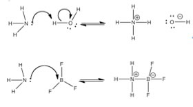
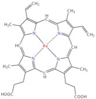

| Chapter 7.3:Lewis Acid-Base Reactions |
Chemists use the Brønsted-Lowry model for any reaction in which a proton is transferred from one atom to another. However, there is an even broader model of acid-base chemistry that can be used to incorporate reactions even when there is no proton transfer. Instead of seeing the reaction as a proton transfer, we can look at it from the vantage point of the electron pair that eventually becomes part of the new bond. That is: we can consider an acid-base reaction as the donation of an electron pair (from a base) to form a bond between the donor atom and the proton (or the acid). So instead of saying water transfers a proton to ammonia, we can view this process as ammonia donating a lone electron pair to form a new bond with a proton from a water molecule. |
7.1 Reactions |
This process results in the transfer of a hydrogen from
the water to the ammonia molecule (a bond formation event). The electrons
that were originally bonded to the H do not disappear - they are left
behind- leading to the generation of a hydroxide (–OH) ion. This kind of analysis allows us to extend our considerations to reactions in which there is no “transferred” H, but where there is a lone pair of electrons that can form a new bond. This approach is known as the Lewis acid-base model. |
| BF3 is a Lewis acid, but note it has no H to donate, it represents a new class of acids. Lewis acids, substances like BF3, or AlCl3 (compounds of periodic table group III atoms), have only 6 electrons in their bonding orbitals and therefore have available (empty), energetically accessible, orbitals that are available to accept an electron pair from the Lewis base (the electron pair donor). |  |
| Other examples of Lewis acids are metal ions, like Fe2+, Fe3+, Mg2+, Zn2+. All of these elements play a critical role in biological systems through their behavior as Lewis acids. An important example is the heme group of hemoglobin). In the center of this group is a positively charged iron (Fe) atom. Such positively charged ions (cations) have empty orbitals that can interact with the lone pair electrons from Lewis bases and form Lewis acid-base complexes. |
| In the case of hemoglobin, important Lewis bases are O2 and CO2 (and CO), and it is this interaction that is involved for moving oxygen into the body from the lungs and from CO2 from the body to the lungs. At this point, this may seems rather abstract and it takes a little practice to gain confidence in recognizing Lewis acid/base reactions, but they are very important in biological, and of course, chemical systems. |  |
If we look back over the expanding theories about acids and bases, we see that the theories become increasingly complex, and each subsequent theory subsumes the previous one while extending the range of reactions that can be explained. So while Lewis acid-base model can explain the simple reaction between HCl and NaOH (–OH is the Lewis base and H+ is the Lewis acid), neither Arrhenius nor Brønsted-Lowry theory can explain why iron complexes with heme and oxygen form the oxygen transport system in our bodies. |
7.1
Reactions |
Question to answer:
|
| 17-Jun-2012 |